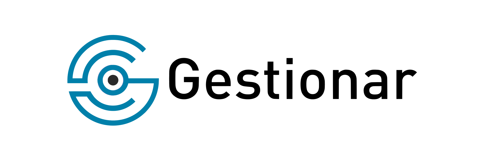
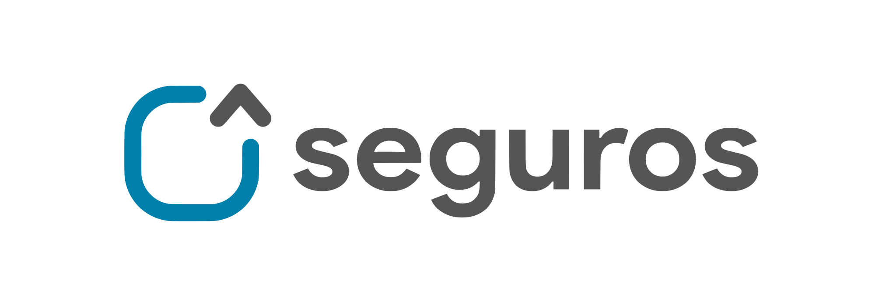
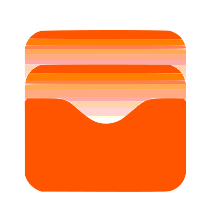
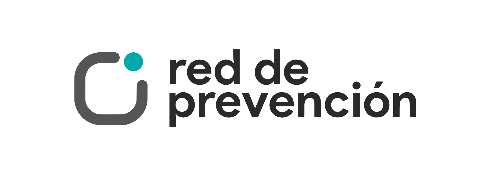

Maximizamos el potencial de tu administración de consorcios
Simplificá la administración, garantizá el cumplimiento normativo y convertí gastos grandes en cuotas accesibles. Incluye Red de Prevención y plataforma Octonar.

Cobertura integral para propiedad horizontal. Prevención, protección total y acompañamiento personalizado en siniestros con las mejores aseguradoras.
Simplificá la gestión integral de tus consorcios, garantizá el cumplimiento normativo y convertí gastos grandes en cuotas fijas y accesibles.

Acceso digital y gestión unificada para tu administración 24/7

Inspeccionamos de forma exhaustiva los 15 sectores críticos de tus consorcios para optimizar la seguridad y el cumplimiento normativo.
Acceso digital y gestión unificada para tu administración 24/7
Acceso digital y gestión unificada para tu administración 24/7